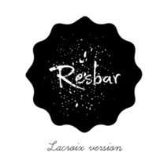

Sistema "Point of Sale" (POS) para administración de negocios
Sistema POS ResBar
ResBar es un sistema para la administración de negocios que buscan aumentar su productividad,
ayudándolos a llevar un control total de las ordenes efectuadas
y de los ingresos en los diferentes puntos de venta, además de permitir
una rápida administración de productos.
Su fácil uso y la gran variedad de opciones lo convierten en una
herramienta poderosa para su negocio.

Características del Sistema
El Sistema ResBar cuenta con diferentes Características y funcionalidades que
facilitan la administración de su negocio
Interfaz gráfica amigable
Creación de nuevas ordenes
Ampliar su Orden.
Modificar órdenes
Fácil cobro de órdenes
Administración de Productos y control de ventas
ResBar es un sistema fundamental para garantizar el éxito de tu restaurante, bar, o cualquier
establecimiento comercial, el uso de esta herramienta nos proporciona un total control
sobre nuestro negocio.
El sistema ResBar permite crear nuevas ordenes de
una manera sencilla y rápida, donde usted puede seleccionar los
productos y cantidad de estos que desea.
Puede agregar más productos a su orden si asi lo desea,
se mostrará un menu de consumibles para que pueda seleccionar
que productos son de su preferencia para agrandar su pedido original, Además,
le permite realizar cambios en una orden efectuada,
permite disminuir o aumentar la cantidad de productos
inicialmente seleccionados.
Ofrece un manejo de estadisticas sobre las ventas obtenidas,
además de llevar el control de existencia de productos.
Sobre el Desarrollo del sistema
Nodejs+ VueJS + bootstrap para el FrontEnd
La unión de estas tecnologias nos proporcionaran un poderoso y amigable
entorno para poder administrar su negocio de una manera
adecuada y con interfaz de usuario de fácil uso.
Base de Datos
El sistema contará con base de datos en MongoDB, este es un potente gestor de base de Datos
no relacional. Para su instalación nos dirigimos a la pagina oficial y descargamos la
versión más
reciente correspondiente a nuestro sistema operativo.
BackEnd
El BackEnd será implementado con Nodejs y Loopback, esta unión de tecnologias
nos proporciona un API REST consistente y fiable.
Nosotros
Somos un grupo de estudiantes de la Facultad Multidisciplinaria de Occidente, enfocados
en el desarrollo de aplicaciones y sistemas para administración de negocios.